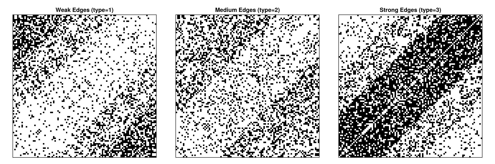
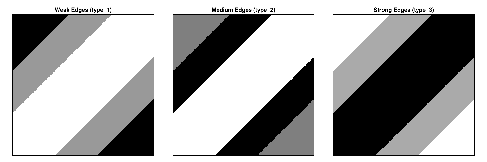
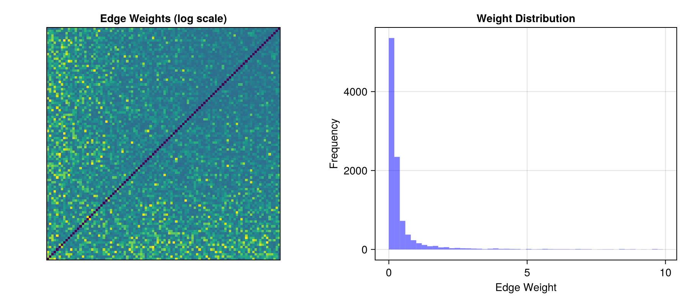
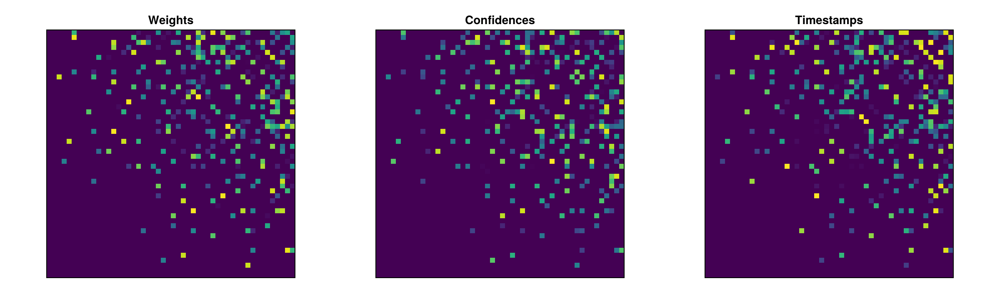

Custom Distributions for Decorated Graphons
This tutorial demonstrates how to use custom distribution types with decorated graphons. While Graphons.jl works seamlessly with Distributions.jl, you can implement your own distribution types for specialized applications.
We'll cover:
- The minimal interface required for custom distributions
- Implementing a custom categorical distribution
- Using custom distributions in decorated graphons
- A practical example with network edge weights
See Custom Distribution Types for more details on implementing custom distributions.
Setup
using Graphons
using Random
using CairoMakie
using Statistics
using StatsAPI
Random.seed!(42)TaskLocalRNG()Understanding the Distribution Interface
For a type to work as a distribution in DecoratedGraphon, it must implement:
rand(rng::AbstractRNG, d::YourDistribution)- Sample from the distributioneltype(d::YourDistribution)- Return the type of sampled values
That's it! These two methods are sufficient for the graphon to sample edges.
Example 1: Custom Categorical Distribution
Let's implement a simple categorical distribution that samples from a discrete set of values with specified probabilities.
struct CustomCategorical{T}
values::Vector{T}
probabilities::Vector{Float64}
cumulative::Vector{Float64} # Precomputed for efficiency
function CustomCategorical(values::Vector{T}, probs::Vector{Float64}) where {T}
@assert length(values)==length(probs) "Values and probabilities must have same length"
@assert sum(probs)≈1.0 "Probabilities must sum to 1"
@assert all(p >= 0 for p in probs) "Probabilities must be non-negative"
# Precompute cumulative probabilities for faster sampling
cumulative = cumsum(probs)
new{T}(values, probs, cumulative)
end
endImplement the required sampling method
function Base.rand(rng::AbstractRNG, d::CustomCategorical)
u = rand(rng)
for (i, cum_prob) in enumerate(d.cumulative)
if u <= cum_prob
return d.values[i]
end
end
return d.values[end] # Fallback for numerical precision
endImplement the required eltype method
Base.eltype(::CustomCategorical{T}) where {T} = TAdd StatsAPI.params method for automatic parameter extraction and plotting
function StatsAPI.params(d::CustomCategorical)
return d.probabilities
endOptional: nice display
function Base.show(io::IO, d::CustomCategorical)
print(io, "CustomCategorical(")
for (i, (v, p)) in enumerate(zip(d.values, d.probabilities))
print(io, v, "=>", round(p, digits = 2))
if i < length(d.values)
print(io, ", ")
end
end
print(io, ")")
endTest our custom distribution:
dist = CustomCategorical([1, 2, 3], [0.5, 0.3, 0.2])
samples = [rand(dist) for _ in 1:1000]
println("Distribution: ", dist)
println("Sample mean: ", mean(samples), " (expected: ",
sum(dist.values .* dist.probabilities), ")")
println("Sample frequencies: ", [count(==(i), samples) for i in 1:3])
println("Parameters: ", StatsAPI.params(dist))Distribution: CustomCategorical(1=>0.5, 2=>0.3, 3=>0.2)
Sample mean: 1.695 (expected: 1.7000000000000002)
Sample frequencies: [496, 313, 191]
Parameters: [0.5, 0.3, 0.2]Example 2: Position-Dependent Edge Types
Now let's create a decorated graphon where the edge type depends on node positions. We'll model a network with three types of edges: weak (1), medium (2), strong (3).
function W_edge_strength(x, y)
distance = abs(x - y)
if distance < 0.3
# Close nodes: mostly strong connections
return CustomCategorical([1, 2, 3], [0.1, 0.2, 0.7])
elseif distance < 0.6
# Medium distance: balanced
return CustomCategorical([1, 2, 3], [0.3, 0.4, 0.3])
else
# Far apart: mostly weak connections
return CustomCategorical([1, 2, 3], [0.6, 0.3, 0.1])
end
end
graphon_strength = DecoratedGraphon(W_edge_strength)DecoratedGraphon{Int64, Matrix{Int64}, typeof(Main.W_edge_strength), Main.CustomCategorical{Int64}}(Main.W_edge_strength)Sample a network:
n = 100
A_strength = sample_graph(graphon_strength, n)
println("Edge type distribution:")
println(" Weak (1): ", count(==(1), A_strength), " (",
round(count(==(1), A_strength) / n^2 * 100, digits = 1), "%)")
println(" Medium (2): ", count(==(2), A_strength), " (",
round(count(==(2), A_strength) / n^2 * 100, digits = 1), "%)")
println(" Strong (3): ", count(==(3), A_strength), " (",
round(count(==(3), A_strength) / n^2 * 100, digits = 1), "%)")Edge type distribution:
Weak (1): 2482 (24.8%)
Medium (2): 2732 (27.3%)
Strong (3): 4686 (46.9%)Visualizing Edge Strength Patterns
fig = Figure(size = (1200, 400))
# Show the three edge types separately
for (i, (edge_type, label)) in enumerate(zip([1, 2, 3], ["Weak", "Medium", "Strong"]))
ax = Axis(fig[1, i],
title = "$label Edges (type=$edge_type)",
aspect = 1)
hidedecorations!(ax)
A_binary = zeros(Bool, n, n)
A_binary[A_strength .== edge_type] .= true
heatmap!(ax, A_binary, colormap = :binary)
end
fig
Notice how strong edges (type 3) cluster along the diagonal (similar positions), while weak edges (type 1) are more common far from the diagonal!
We can compare the above plots with the underlying probabilities from the graphon:
fig = Figure(size = (1200, 400))
# Show the three edge types separately
for (i, (edge_type, label)) in enumerate(zip([1, 2, 3], ["Weak", "Medium", "Strong"]))
ax = Axis(fig[1, i],
title = "$label Edges (type=$edge_type)",
aspect = 1)
hidedecorations!(ax)
heatmap!(ax, graphon_strength, k = i, res = 0.001, colormap = :binary)
end
fig
Example 3: Custom Weighted Distribution
Let's create a custom distribution for continuous edge weights that aren't available in Distributions.jl. We'll implement a truncated power-law distribution.
struct TruncatedPowerLaw
α::Float64 # Power-law exponent
x_min::Float64 # Minimum value
x_max::Float64 # Maximum value
function TruncatedPowerLaw(α, x_min, x_max)
@assert α>0 "Exponent must be positive"
@assert x_max>x_min>0 "Must have x_max > x_min > 0"
new(α, x_min, x_max)
end
end
function Base.rand(rng::AbstractRNG, d::TruncatedPowerLaw)
# Inverse transform sampling for power law
u = rand(rng)
if d.α ≈ 1.0
return d.x_min * exp(u * log(d.x_max / d.x_min))
else
a = 1 - d.α
return (d.x_min^a + u * (d.x_max^a - d.x_min^a))^(1 / a)
end
end
Base.eltype(::TruncatedPowerLaw) = Float64
function Base.show(io::IO, d::TruncatedPowerLaw)
print(io, "TruncatedPowerLaw(α=", d.α, ", range=[", d.x_min, ", ", d.x_max, "])")
end
function StatsAPI.params(d::TruncatedPowerLaw)
return (d.α, d.x_min, d.x_max)
endCreate a graphon with power-law weighted edges:
function W_powerlaw(x, y)
# Exponent depends on positions
α = 1.5 + 2.0 * min(x, y) # α between 1.5 and 3.5
return TruncatedPowerLaw(α, 0.1, 10.0)
end
graphon_powerlaw = DecoratedGraphon(W_powerlaw)
A_powerlaw = sample_graph(graphon_powerlaw, 100)
println("Power-law weighted network:")
println(" Mean weight: ", mean(A_powerlaw))
println(" Median weight: ", median(A_powerlaw))
println(" Weight range: [", minimum(A_powerlaw), ", ", maximum(A_powerlaw), "]")Power-law weighted network:
Mean weight: 0.4804420867802672
Median weight: 0.18428313874517033
Weight range: [0.0, 9.91230113691524]Visualize the weighted network:
fig = Figure(size = (900, 400))
ax1 = Axis(fig[1, 1],
title = "Edge Weights (log scale)",
aspect = 1)
hidedecorations!(ax1)
heatmap!(ax1, log10.(A_powerlaw .+ 0.01), colormap = :viridis)
ax2 = Axis(fig[1, 2],
title = "Weight Distribution",
xlabel = "Edge Weight",
ylabel = "Frequency")
hist!(ax2, vec(A_powerlaw), bins = 50, color = (:blue, 0.5))
fig
and compare to the underlying graphon
fig = Figure(size = (450, 400))
ax1 = Axis(fig[1, 1],
title = "α",
aspect = 1)
hidedecorations!(ax1)
heatmap!(ax1, graphon_powerlaw, colormap = :viridis)
fig![Example block output]()
Example 4: Multi-Value Edge Attributes
We can also create distributions that return multiple attributes per edge. For efficiency, we use StaticArrays.SVector:
using StaticArrays
struct MultiAttributeEdge
base_prob::Float64
end
function Base.rand(rng::AbstractRNG, d::MultiAttributeEdge)
# Return a vector of [weight, confidence, timestamp]
if rand(rng) < d.base_prob
weight = rand(rng) * 10.0
confidence = rand(rng)
timestamp = rand(rng, 1:100)
return SVector(weight, confidence, Float64(timestamp))
else
return SVector(0.0, 0.0, 0.0) # No edge
end
end
Base.eltype(::MultiAttributeEdge) = SVector{3, Float64}
function Base.show(io::IO, d::MultiAttributeEdge)
print(io, "MultiAttributeEdge(p=", d.base_prob, ")")
endCreate a graphon with multi-attribute edges:
function W_multiattr(x, y)
prob = x * y * 0.5
return MultiAttributeEdge(prob)
end
graphon_multi = DecoratedGraphon(W_multiattr)
A_multi = sample_graph(graphon_multi, 50)
println("Multi-attribute network shape: ", size(A_multi))
println("Edge attribute vector type: ", typeof(A_multi[1, 1]))Multi-attribute network shape: (50, 50)
Edge attribute vector type: StaticArraysCore.SVector{3, Float64}Extract individual attributes:
weights = [a[1] for a in A_multi]
confidences = [a[2] for a in A_multi]
timestamps = [a[3] for a in A_multi]
fig = Figure(size = (1200, 350))
ax1 = Axis(fig[1, 1], title = "Weights", aspect = 1)
hidedecorations!(ax1)
heatmap!(ax1, weights, colormap = :viridis)
ax2 = Axis(fig[1, 2], title = "Confidences", aspect = 1)
hidedecorations!(ax2)
heatmap!(ax2, confidences, colormap = :viridis)
ax3 = Axis(fig[1, 3], title = "Timestamps", aspect = 1)
hidedecorations!(ax3)
heatmap!(ax3, timestamps, colormap = :viridis)
fig
Key Takeaways
- Minimal interface: Only
rand(rng, d)andeltype(d)are required - Flexibility: Can implement any sampling logic you need
- Performance: Pre-compute what you can (like cumulative probabilities)
- Type stability: Use concrete types and
SVectorfor multi-valued returns - Integration: Works seamlessly with all Graphons.jl functionality
When to Use Custom Distributions
Consider implementing custom distributions when:
- You need a distribution not available in Distributions.jl
- You want specialized sampling logic (e.g., rejection sampling)
- You need very high performance for a specific distribution
- You're working with complex multi-attribute edges
- You want to integrate with external libraries or data sources
Next Steps
- For standard distributions, use
Distributions.jl(it's faster and well-tested) - For complex sampling logic, consider making your type a subtype of
Distributions.Sampleable - Profile your custom distributions to ensure good performance
- See the Distributions.jl documentation for more advanced features
This page was generated using Literate.jl.